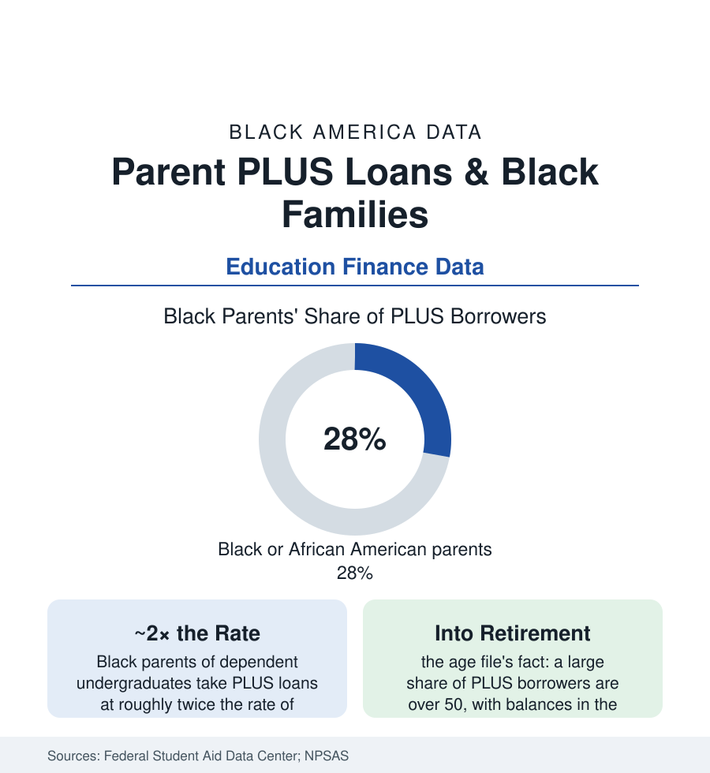

Black Education
Parent PLUS Loans: The Debt Black Parents Carry for Their Children's Degrees
Black parents borrow PLUS loans at the highest rates and the highest balances of any group — often for HBCUs — with repayment that reaches into retirement. The federal loan data.

The student-debt file has a parent chapter, and its racial data are the most extreme in the federal loan book: Black parents borrow Parent PLUS loans — the federal program letting parents finance a child's undergraduate education up to the full cost of attendance — at roughly twice the rate of white parents in the national postsecondary aid surveys, carry above-average balances on below-average incomes, and form about 28% of PLUS borrowers from about 14% of the undergraduate population's families. The loans are the wealth gap converted into an instrument: the families with the least cushion financing the credential their children need, at the program's terms, which are the harshest in the federal portfolio. This article reads the PLUS data.
The Program's Design and Its Borrowers
PLUS's architecture explains its demographics in the program data: it is the only federal education loan with essentially no ability-to-repay standard (a light adverse-credit check, no debt-to-income test — the design that makes it the lender of last resort for families the private market declined), it carries the federal book's highest undergraduate interest rate and an origination fee near four percent, and its repayment safety net is the thinnest (the income-driven options largely closed to parent borrowers, the consolidation workaround narrowing in the current rules). The borrower profile in the NPSAS waves follows the design exactly: PLUS use concentrates among families with the least wealth relative to college cost — Black families at every income level borrowing at higher rates than white families at the same income (the asset file's arithmetic: income parity without wealth parity still leaves the tuition bill unpayable from savings), and HBCU families above all — the HBCU sector's PLUS dependence a documented structural feature, several HBCUs' tuition revenue running substantially through the program, its parents the program's most loyal and most burdened cohort.
The 2011 Shock: A Policy Natural Experiment
The program's history contains the education-finance literature's starkest case study: in 2011 the Education Department tightened the adverse-credit definition — and PLUS denials for Black families spiked overnight, enrollment at HBCUs dropped measurably the following terms (the enrollment data recording thousands of students gone mid-degree), the institutions' revenue fell by tens of millions, and the policy was reversed amid the documented damage, with the department's apology in the record. The episode stands in this atlas for a principle the data keep teaching: a program can be simultaneously a burden and a lifeline, and the families inside it know the terms are bad and the alternative — the child not finishing — is worse. Every reform proposal since (the income checks, the caps, the institutional-risk-sharing plans in the policy literature) is graded by the HBCU file's question: what does it do to the enrollment that the current harsh program, alone among lenders, still finances?
Repayment: The Retirement Collision
The repayment data give the file its human arithmetic: PLUS borrowers' median incomes in the mid ranges, their balances frequently in the tens of thousands for one child's degree (and multiplied across children in the family data), their ages at borrowing centered in the late forties and fifties — the amortization running into the retirement years the census section prices, where the loans collide with the retirement-savings file's thin balances. Default rates for PLUS run highest among the low-income and Black cohorts in the cohort-default data, and default's remedies are the federal book's most severe (wage and benefit garnishment through the Treasury offset — Social Security checks docked for a child's unfinished degree, the GAO's counts of older borrowers in offset rising across the program's history). The forgiveness files touch the cohort unevenly (public-service forgiveness reachable by the public-sector parents; the broad relief debates of the era recording PLUS parents as the relief map's forgotten cell — their loans' terms the last reformed in every package in the record).
Reading the PLUS Data
Twice the borrowing rate, on thinner wealth, at the book's worst terms, into the retirement years: the PLUS file is the education system's honest price tag for the families the wealth data shorted — parents purchasing, at retail credit prices, the mobility the brochures describe as the system's gift. The enrollment it finances is real (the degrees in the attainment file were substantially bought here), and so is the garnishment notice in the retirement file. Both entries belong to the same ledger, and this article declines to read only one.
More in Black Education
Black Educational Attainment: High School Parity, the College Gap
About 89 percent of Black adults hold a high school diploma and one in four holds a bachelor's degree or higher — the attainment ladder, the college completion gap, and the generational trend.
Historically Black Colleges and Universities: Enrollment and Degrees
More than 100 HBCUs enroll roughly 290,000 students and award about one in six Black bachelor's degrees — an outsized share from a small sector. The federal education data.
Black College Enrollment: 2.4 Million Students
About 2.4 million Black students are enrolled in American colleges — nearly two-thirds of them women. The NCES enrollment data by sector, level, and trend.
Source: U.S. Department of Education, Federal Student Aid Data Center; National Center for Education Statistics, NPSAS; Century Foundation and Brookings Institution analyses of PLUS lending.